We want to see how soccer has changed through the years in terms of attack and defense. Our hypothesis is that the english football has become more competitive. For proving this hypothesis we will analyze the differences among the teams that conform the Premier League, the dominance and the results of the matches.
First of all, we know that goals can be a strong indicator to understand this, so we plan to base our first analysis on the average number of goals scored by teams.
# Average goals through the years, by local and away.# Cleveland plots for the average goals by league through the years.premier_full <- Data_England |>filter(Div =="E0")#dim(premier_full)#premier_full |># select(Season, Date, HomeTeam, AwayTeam, FTHG, FTAG) |># head(20)#premier_full |># count(Season) |># arrange(Season) |># print(n = Inf)premier_full <- premier_full |>mutate(Date =dmy(Date))#premier_full |># select(Season, Date, HomeTeam, AwayTeam) |># head(10)#summary(premier_full$Date)premier_full <- premier_full |>mutate(Year =year(Date))#premier_full |># select(Season, Date, Year, HomeTeam, AwayTeam) |># head(12)#premier_full |># count(Year) |># arrange(Year) |># print(n = Inf)premier_full <- premier_full |>mutate(TotalGoals = FTHG + FTAG)#premier_full |># select(Season, Date, HomeTeam, AwayTeam,# FTHG, FTAG, TotalGoals) |># head(10)#summary(premier_full$TotalGoals)premier_full <- premier_full |>group_by(Season) |>filter(n() ==380) |>ungroup()#premier_full |># count(Season) |># arrange(Season)premier_goals <- premier_full |>select(Season, Year, HomeTeam, AwayTeam, FTHG, FTAG, TotalGoals)#head(premier_goals)#summary(premier_goals)premier_goals_yearly <- premier_goals |>group_by(Year) |>summarise(avg_home_goals =mean(FTHG, na.rm =TRUE),avg_away_goals =mean(FTAG, na.rm =TRUE),avg_total_goals =mean(TotalGoals, na.rm =TRUE) )#premier_goals_yearly |># head(15)#premier_goals_yearly |># tail(10)#summary(premier_goals_yearly)premier_goals_yearly |>ggplot(aes(x = Year)) +geom_line(aes(y = avg_home_goals, color ="Home"), linewidth =1) +geom_point(aes(y = avg_home_goals, color ="Home"), size =2) +geom_line(aes(y = avg_away_goals, color ="Away"), linewidth =1) +geom_point(aes(y = avg_away_goals, color ="Away"), size =2) +scale_color_manual(values =c("Home"="#1f77b4", "Away"="#d62728")) +labs(title ="Average Home and Away Goals per Season — Premier League",subtitle ="Only complete seasons (380 matches per season)",x ="Year",y ="Average Goals per Match",color ="Team" ) +theme_minimal(base_size =12) +theme(legend.position ="bottom",plot.title =element_text(size =14, face ="bold") )
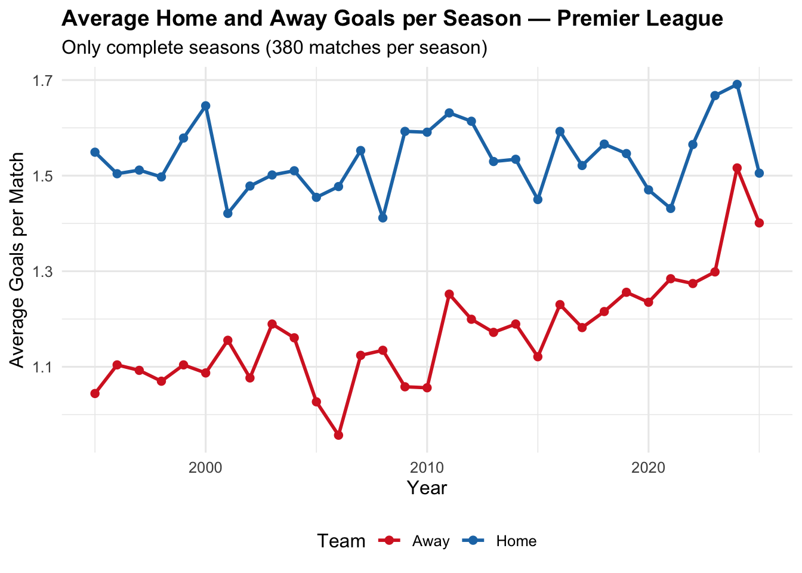
While the average number of goals by home teams has remained relatively stable since 1993, away teams show a clear upward trend in goals, reflecting more offensive strategies, especially since 2015. This suggests a reduction in the traditional home-field advantage.
Code
data_cleveland <- premier_goals_yearly |>pivot_longer(cols =c(avg_home_goals, avg_away_goals, avg_total_goals),names_to ="type",values_to ="value" ) |>mutate(type =case_when( type =="avg_home_goals"~"Home Goals", type =="avg_away_goals"~"Away Goals", type =="avg_total_goals"~"Total Goals" ) )ggplot(data_cleveland, aes(x = value, y =factor(Year))) +geom_point(size =2, color ="black") +geom_segment(aes(x =0, xend = value, y =factor(Year), yend =factor(Year)),linewidth =0.6,color ="gray60" ) +facet_wrap(~ type, scales ="free_x", ncol =1) +labs(title ="Cleveland Plot — Average Goals per Season (Premier League)",x ="Average Goals per Match",y ="Season (Year)" ) +theme_minimal(base_size =12) +theme(panel.spacing =unit(1, "lines"),strip.text =element_text(size =12, face ="bold"),plot.title =element_text(size =16, face ="bold") )
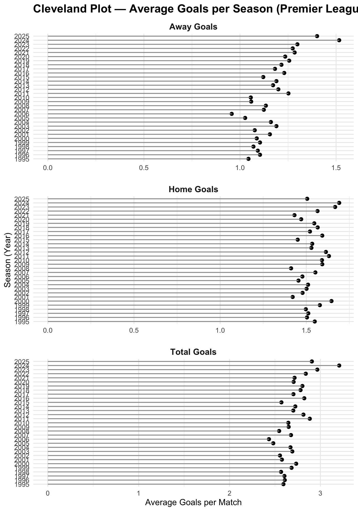
i. Away goals
Between 1993 and 2010, away teams scored about 1.10-1.15 goals per match, but since 2011 this number has increased to around 1.20-1.25. Starting in 2018, we can observe a sustained raise in away goals, reaching historic highs in 2023 and 2024, when they exceeded 1.45 goals per match.
ii. Home goals
Home teams have consistently scored between 1.45 and 1.65 goals per match throughout the entire period, with small drops in 2008 and 2015. Recently, in 2023, there was an increase, but not one strong enough to confirm an upward trend.
Conclusion
Home-field advantage has decreased significantly over the years. The recent offensive surge in the Premier League comes mainly from away teams.
Code
premier_full_complete <- premier_full |>group_by(Season) |>filter(n() ==380) |>ungroup()# Proportion of results: H, A, Dresults_yearly <- premier_full_complete |>group_by(Year, FTR) |>summarise(n =n(), .groups ="drop") |>group_by(Year) |>mutate(prop = n /sum(n)) |>ungroup()# Proportion of Match Results per Season — Premier Leagueresults_yearly |>ggplot(aes(x = Year, y = prop, fill = FTR)) +geom_area(alpha =0.8) +scale_fill_brewer(palette ="Set1", labels =c("H"="Home win","D"="Draw","A"="Away win"),name ="Result" ) +labs(title ="Proportion of Match Results per Season — Premier League",subtitle ="Only complete seasons (380 matches per season)",x ="Year",y ="Proportion of Matches" ) +theme_minimal(base_size =12) +theme(legend.position ="bottom",plot.title =element_text(size =14, face ="bold") )
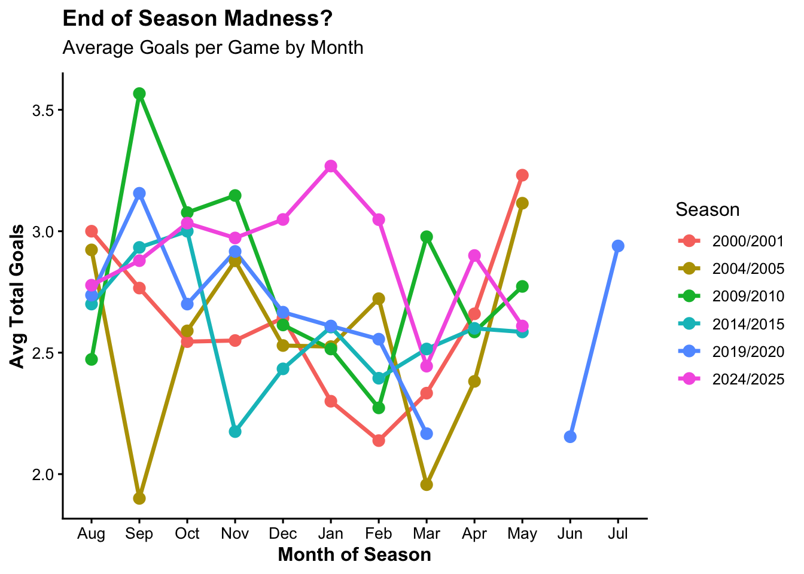
Over the past three decades, Premier League results show a decrease in draws, an increase in away-team victories, and relatively stable home-team victories. This suggests that the league has become more competitive and that the traditional home-field advantage has gradually diminished.
4 Location of Teams
We have 116 teams across all the tiers, we can see that London and
[1] "East" "East Midlands"
[3] "East Wales" "Greater London"
[5] "North East" "North West"
[7] "South East" "South West"
[9] "West Midlands" "West Wales and the Valleys"
[11] "Yorkshire and the Humber"
Code
england_wales_regions <- uk_states %>%filter(geonunit %in%c("England", "Wales")) %>%group_by(region) %>%summarise(geometry =st_union(geometry))pos <-position_jitter(width =0.3, seed =2)premier_league_teams <-unique(filter(Data_England, Div=="E0"& Season=="2024/2025")$HomeTeam)ggplot() +geom_sf(data = england_wales_regions,aes(fill=region), color ="white", linewidth =0.3) +geom_point(data = stadiums, aes(x = lon, y = lat), color ="black", size =1.5, alpha = .5) +geom_label_repel(data = stadiums %>%filter(team %in% premier_league_teams),aes(x = lon, y = lat, label = team), min.segment.length =0, seed =42, max.overlaps =30,size=2.5) +coord_sf(xlim =c(-6, 2), ylim =c(50, 56)) +labs(title="Location of English football clubs Stadiums",fill="Region",caption="Labels only of clubs competing in Premier League during season 2024/2025")+theme_minimal()
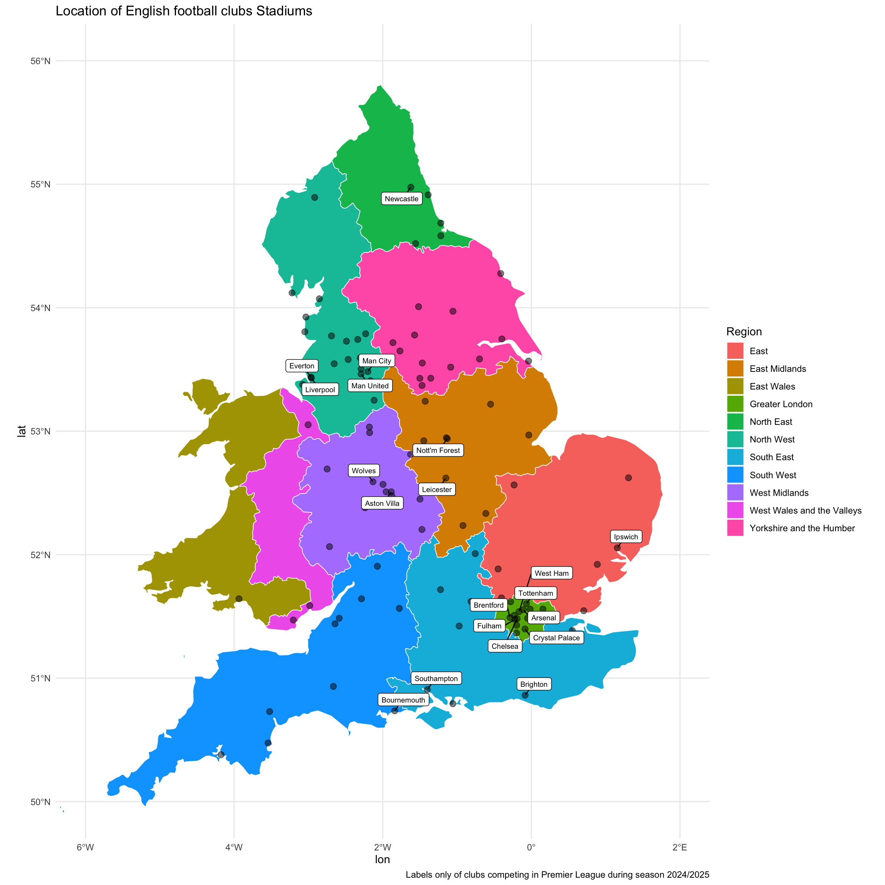
To Do: Add number of teams per region. (?)
5 Team performance by league over the years
Code
calculate_points <-function(full_time_result, is_home_team) {case_when( full_time_result =="H"& is_home_team ~3, full_time_result =="A"&!is_home_team ~3, full_time_result =="D"~1,TRUE~0 )}# 2. CALCULATE LEAGUE STANDINGS# Home resultshome_results <- Data_England %>%select(Season, Div, HomeTeam, FTHG, FTAG, FTR,Tier) %>%rename(Team = HomeTeam, GoalsFor = FTHG, GoalsAgainst = FTAG) %>%mutate(Points =calculate_points(FTR, TRUE),Venue ="Home" )# Away resultsaway_results <- Data_England %>%select(Season, Div, AwayTeam, FTHG, FTAG, FTR,Tier) %>%rename(Team = AwayTeam, GoalsFor = FTAG, GoalsAgainst = FTHG) %>%mutate(Points =calculate_points(FTR, FALSE),Venue ="Away" )# Combine and calculate standingsall_results <-bind_rows(home_results, away_results)season_standings <- all_results %>%group_by(Season, Div, Team,Tier) %>%summarise(Played =n(),Wins =sum(Points ==3),Draws =sum(Points ==1),Losses =sum(Points ==0),GoalsFor =sum(GoalsFor),GoalsAgainst =sum(GoalsAgainst),GoalDifference = GoalsFor - GoalsAgainst,Points =sum(Points),.groups ='drop' ) %>%group_by(Season, Div) %>%mutate(Position =rank(desc(Points), ties.method ="first") ) %>%arrange(Season, Div, Position)titles_data=season_standings |>filter(Div=="E0"&Position==1) |>group_by(Team) |>summarise(Titles=n())# Merge titles data with seasons data# Create the plot with highlighted Tier 1 teamsmost_recent_season <-max(Data_England$Season, na.rm =TRUE)current_tier1_teams <- Data_England %>%filter(Div =="E0"& Season == most_recent_season) %>%distinct(HomeTeam) %>%pull(HomeTeam)Data_Teams <- Data_England |>filter(Div =="E0") |>group_by(HomeTeam) |>summarize(Seasons =n_distinct(Season)) |>mutate(# Identify if team is currently in Tier 1Current_Tier1 = HomeTeam %in% current_tier1_teams,# Create fill color based on Tier 1 statusTeam_Type =ifelse(Current_Tier1, "Current Tier 1", "Other Teams") )Data_Teams_Enhanced <- Data_Teams |>left_join(titles_data, by =c("HomeTeam"="Team")) |>mutate(Titles =replace_na(Titles, 0),Current_Tier1 = HomeTeam %in% current_tier1_teams,Team_Type =ifelse(Current_Tier1, "Premier League", "Lower Tiers") )# Plot with titles in labelsData_Teams_Enhanced %>%mutate(HomeTeam =fct_reorder(HomeTeam, Seasons)) %>%ggplot(aes(x = HomeTeam, y = Seasons, fill = Team_Type)) +geom_col() +geom_col(aes(x = HomeTeam, y = Titles),fill="gold3")+geom_text(aes(label =ifelse(Titles >0, paste0("Titles: ", Titles),"" )),# y = 0.5, # Position at the start of the barhjust =0, size =3.5, color ="black",fontface ="bold") +coord_flip() +labs(title ="Premier League Seasons and Titles",x ="Team",y ="Seasons",fill ="",caption="" ) +scale_fill_manual(values =c("Premier League"="steelblue", "Lower Tiers"="lightsteelblue") ) +scale_y_continuous(expand =expansion(mult =c(0, 0.15))) +theme_minimal(base_size =13) +theme(legend.position ="bottom")
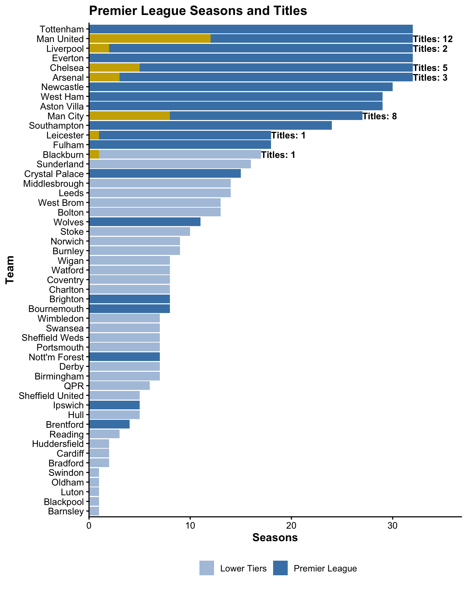
A typical league is very competitive, besides fighting for be champion, teams also can try to get into european competitions or avoid relegation.
Code
# Alluvial of the standigns of each league over the last years.target_season <-"2023/2024"prem_season <- premier_full_complete |>filter(Season == target_season)prem_season <- prem_season |>mutate(Date =as.Date(Date))results_long <-bind_rows( prem_season |>transmute( Date,Team = HomeTeam,Opp = AwayTeam,GF = FTHG,GA = FTAG ), prem_season |>transmute( Date,Team = AwayTeam,Opp = HomeTeam,GF = FTAG,GA = FTHG )) |>arrange(Date, Team) |>mutate(Points =case_when( GF > GA ~3L, GF == GA ~1L,TRUE~0L ),GD = GF - GA )results_cum <- results_long |>group_by(Team) |>arrange(Date, .by_group =TRUE) |>mutate(game_number =row_number(), cum_pts =cumsum(Points),cum_gd =cumsum(GD),cum_gf =cumsum(GF) ) |>ungroup()# Ranking after each game weekstandings_by_round <- results_cum |>group_by(game_number) |>arrange(desc(cum_pts),desc(cum_gd),desc(cum_gf), Team,.by_group =TRUE ) |>mutate(Position =row_number()) |>ungroup()max_round <-max(standings_by_round$game_number, na.rm =TRUE)cuts <-sort(unique(c(1, seq(5, max_round, by =5), max_round)))alluvial_df <- standings_by_round |>filter(game_number %in% cuts) |>mutate(Matchday =factor(game_number, levels = cuts),PosFactor =factor(Position, levels =1:20) )ggplot( alluvial_df,aes(x = Matchday,stratum = PosFactor,alluvium = Team,y =1,fill = Team)) +geom_flow(stat ="alluvium",lode.guidance ="frontback",alpha =0.65 ) +geom_stratum(width =0.25, color ="grey30") +stat_stratum(geom ="text",aes(label =after_stat(stratum)),size =3,color ="black" ) +guides(fill ="none") +# Names of the teams after the last roundgeom_text(stat ="alluvium",data = dplyr::filter( alluvial_df, Matchday ==levels(Matchday)[length(levels(Matchday))] ),aes(label = Team),size =3,color ="black",hjust =-0.05,position =position_nudge(x =0.2) ) +scale_x_discrete(expand =expansion(mult =c(0.02, 0.20))) +labs(title ="Team Positions Over the Season (Alluvial)",subtitle =paste("Premier League", target_season,"— positions shown every 5 matchdays" ),x ="Matchday",y ="Number of teams",caption ="Source: football-data.co.uk | EDAV Final Project" ) +theme_minimal(base_size =13) +theme(panel.grid.major.x =element_blank(),panel.grid.minor =element_blank() )
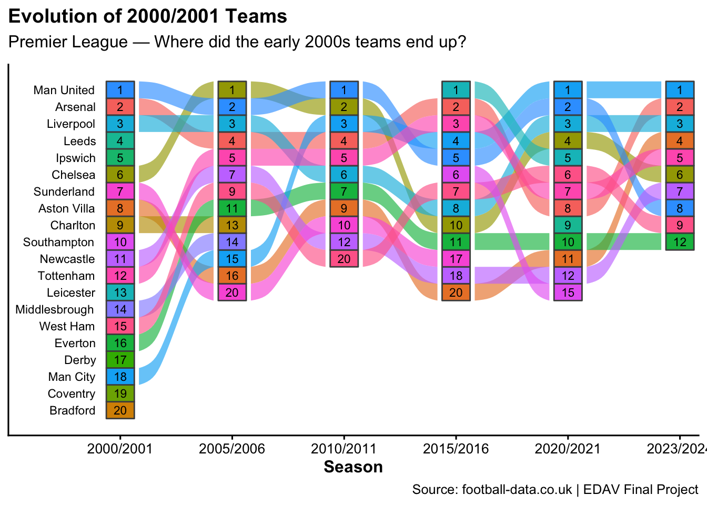
Code
# Teams in the last season, where were they in the last seasons?## Definition of standings_finalseason_sizes <- premier_full |>count(Season, name ="n_matches")complete_seasons <- season_sizes |>filter(n_matches ==380) |>pull(Season)premier_complete <- premier_full |>filter(Season %in% complete_seasons)seasons_sel <-c("2000/2001", "2005/2006", "2010/2011","2015/2016", "2020/2021", "2023/2024")premier_sel <- premier_complete |>filter(Season %in% seasons_sel)results_long <-bind_rows( premier_sel |>transmute(Season,Team = HomeTeam,GF = FTHG,GA = FTAG), premier_sel |>transmute(Season,Team = AwayTeam,GF = FTAG,GA = FTHG)) |>mutate(Points =case_when( GF > GA ~3L, GF == GA ~1L,TRUE~0L ),GD = GF - GA )standings_final <- results_long |>group_by(Season, Team) |>summarise(points =sum(Points, na.rm =TRUE),gd =sum(GD, na.rm =TRUE),gf =sum(GF, na.rm =TRUE),.groups ="drop" ) |>group_by(Season) |>arrange(Season,desc(points), desc(gd), desc(gf), Team,.by_group =TRUE) |>mutate(Position =row_number()) |>ungroup()teams_first_season <- standings_final |>filter(Season =="2000/2001") |>pull(Team)standings_first <- standings_final |>filter(Team %in% teams_first_season) |>mutate(Season =factor(Season, levels = seasons_sel),PosFactor =factor(Position, levels =20:1) )ggplot( standings_first,aes(x = Season,stratum = PosFactor,alluvium = Team,y =1,fill = Team)) +geom_flow(stat ="alluvium",lode.guidance ="frontback",alpha =0.65) +geom_stratum(width =0.25, color ="grey30") +stat_stratum(geom ="text",aes(label =after_stat(stratum)),size =3, color ="black") +guides(fill ="none") +geom_text(stat ="alluvium",data = standings_first |>filter(Season == seasons_sel[1]),aes(label = Team),size =3, color ="black", hjust =1.05,position =position_nudge(x =-0.2) ) +scale_x_discrete(expand =expansion(mult =c(0.20, 0.02))) +scale_y_reverse(breaks =NULL) +labs(title ="Evolution of 2000/2001 Teams",subtitle ="Premier League — Where did the early 2000s teams end up?",x ="Season",y =NULL,caption ="Source: football-data.co.uk | EDAV Final Project" ) +theme_minimal(base_size =13) +theme(panel.grid.major.x =element_blank(),panel.grid.minor =element_blank(),axis.text.y =element_blank() )
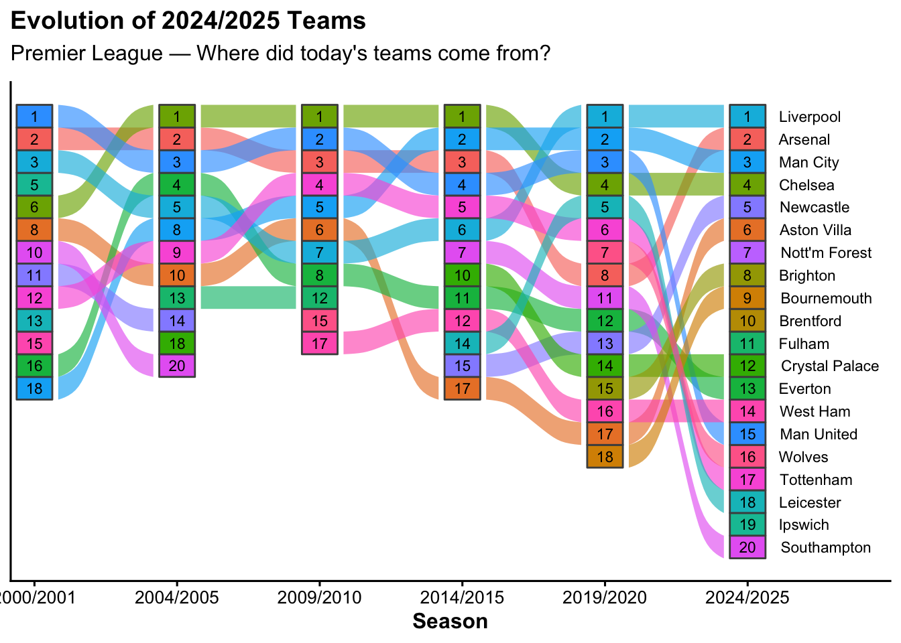
is this graph repeated?
Code
# Teams in the season 2000/2001: where are they in the current season?# Equipos que aparecen en 2000/2001teams_first_season <- standings_final |>filter(Season =="2000/2001") |>pull(Team)standings_first <- standings_final |>filter(Team %in% teams_first_season) |>mutate(Season =factor(Season, levels = seasons_sel),PosFactor =factor(Position, levels =20:1) )# Gráficaggplot( standings_first,aes(x = Season,stratum = PosFactor,alluvium = Team,y =1,fill = Team)) +geom_flow(stat ="alluvium",lode.guidance ="frontback",alpha =0.65) +geom_stratum(width =0.25, color ="grey30") +stat_stratum(geom ="text",aes(label =after_stat(stratum)),size =3, color ="black") +guides(fill ="none") +# Etiquetas en la PRIMERA temporada (lado izquierdo)geom_text(stat ="alluvium",data = standings_first |>filter(Season == seasons_sel[1]), # Primera temporadaaes(label = Team),size =3, color ="black", hjust =1.05, # hjust > 1 para ponerlo a la izquierdaposition =position_nudge(x =-0.2) # Nudge negativo para mover a la izquierda ) +scale_x_discrete(expand =expansion(mult =c(0.20, 0.02))) +# Más espacio a la izquierdascale_y_reverse(breaks =NULL) +labs(title ="Evolution of 2000/2001 Teams",subtitle ="Premier League — Where did the early 2000s teams end up?",x ="Season",y =NULL,caption ="Source: football-data.co.uk | EDAV Final Project" ) +theme_minimal(base_size =13) +theme(panel.grid.major.x =element_blank(),panel.grid.minor =element_blank(),axis.text.y =element_blank() )
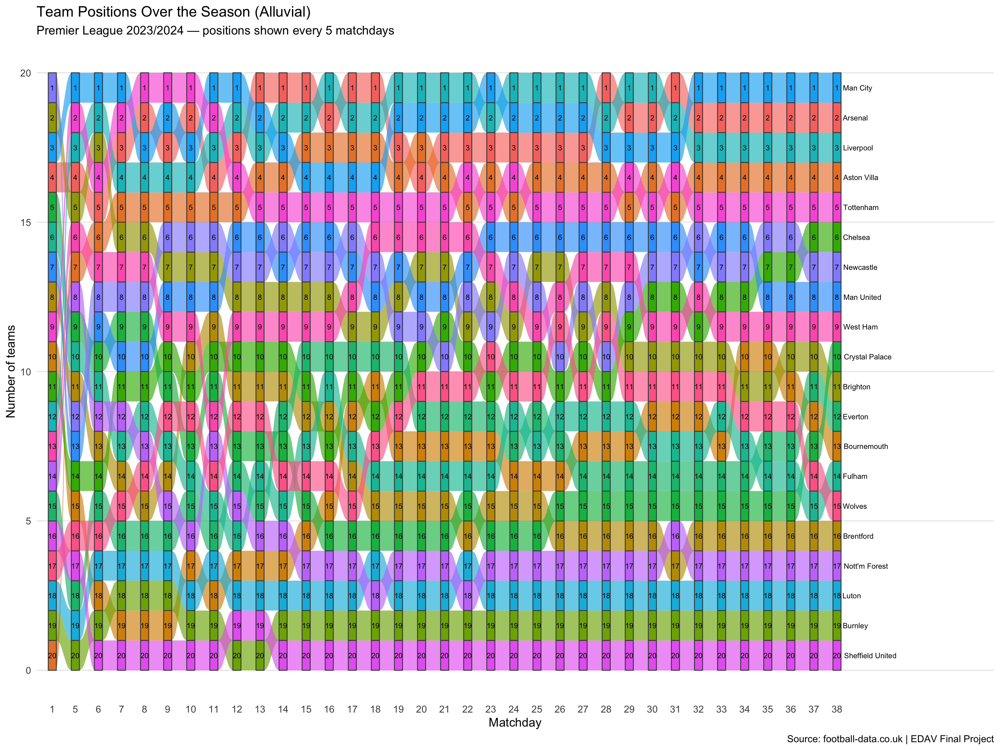
6 Relation among numeric variables
We would like to conduct and analysis to examine the relationships among the different numeric variables in the dataset, for example: the number of goals, (home/away), shots, corners, offsides, total card points (yellow + red), win odds, and draw odds.
Code
#premier_full_complete |># group_by(Season) |># summarise(# shots_missing = sum(is.na(HS) | is.na(AS)),# shots_on_target_missing = sum(is.na(HST) | is.na(AST))# ) |># arrange(shots_missing)premier_full_complete <- premier_full |>group_by(Season) |>filter(n() ==380) |>ungroup()team_stats <-bind_rows(# Partidos como LOCAL premier_full_complete |>transmute( Season,Team = HomeTeam,GF = FTHG,GA = FTAG,ShotsFor = HS,ShotsAg = AS,SOTFor = HST,SOTAg = AST ),# Partidos como VISITANTE premier_full_complete |>transmute( Season,Team = AwayTeam,GF = FTAG,GA = FTHG,ShotsFor = AS,ShotsAg = HS,SOTFor = AST,SOTAg = HST )) |>group_by(Season, Team) |>summarise(matches =n(),goals_for =sum(GF, na.rm =TRUE),goals_against =sum(GA, na.rm =TRUE),shots_for =sum(ShotsFor, na.rm =TRUE),shots_against =sum(ShotsAg, na.rm =TRUE),shots_on_target_for =sum(SOTFor, na.rm =TRUE),shots_on_target_against =sum(SOTAg, na.rm =TRUE),.groups ="drop" )# Table with goals and shots for each team by seasonseasons_focus <-c("2000/2001", "2009/2010", "2023/2024")team_stats_focus <- team_stats |>filter(Season %in% seasons_focus) |>mutate(Season =factor(Season, levels = seasons_focus) )# 2. Parallel coordinates plotggparcoord(data = team_stats_focus,columns =match(c("goals_for","goals_against","shots_on_target_for","shots_on_target_against"),names(team_stats_focus) ),groupColumn ="Season",scale ="globalminmax", # todos los ejes entre 0 y 1alphaLines =0.6,showPoints =TRUE) +labs(title ="Team Profiles Across Seasons — Premier League",subtitle ="Parallel coordinates for seasons 2000/2001, 2009/2010 and 2023/2024",x ="Metric",y ="Scaled value" ) +theme_minimal(base_size =11) +theme(plot.title =element_text(size =14, face ="bold"),legend.position ="bottom" )
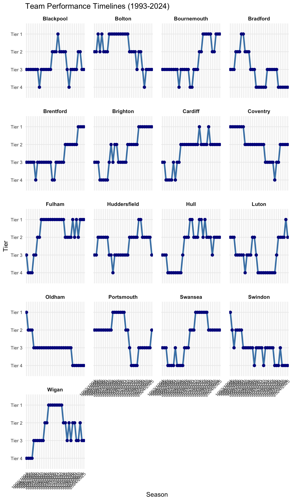
Code
# 1. Temporadas que queremos compararseasons_focus <-c("2000/2001", "2009/2010", "2023/2024")team_stats_focus <- team_stats |>filter(Season %in% seasons_focus) |>mutate(Season =factor(Season, levels = seasons_focus) )# 2. Reescalar métricas a [0,1] (min–max global)team_stats_scaled <- team_stats_focus |>mutate(goals_for_s =rescale(goals_for),goals_against_s =rescale(goals_against),shots_on_target_for_s =rescale(shots_on_target_for),shots_on_target_against_s =rescale(shots_on_target_against) )# 3. Parallel coordinates con métricas escaladasGGally::ggparcoord(data = team_stats_scaled,columns =match(c("goals_for_s","goals_against_s","shots_on_target_for_s","shots_on_target_against_s"),names(team_stats_scaled) ),groupColumn ="Season",scale ="globalminmax", # ya están en [0,1], esto no cambia nadaalphaLines =0.6,showPoints =TRUE) +labs(title ="Team Profiles Across Seasons — Premier League",subtitle ="Metrics rescaled to [0,1] for seasons 2000/2001, 2009/2010 and 2023/2024",x ="Metric",y ="Scaled value" ) +theme_minimal(base_size =11) +theme(plot.title =element_text(size =14, face ="bold"),legend.position ="bottom" )
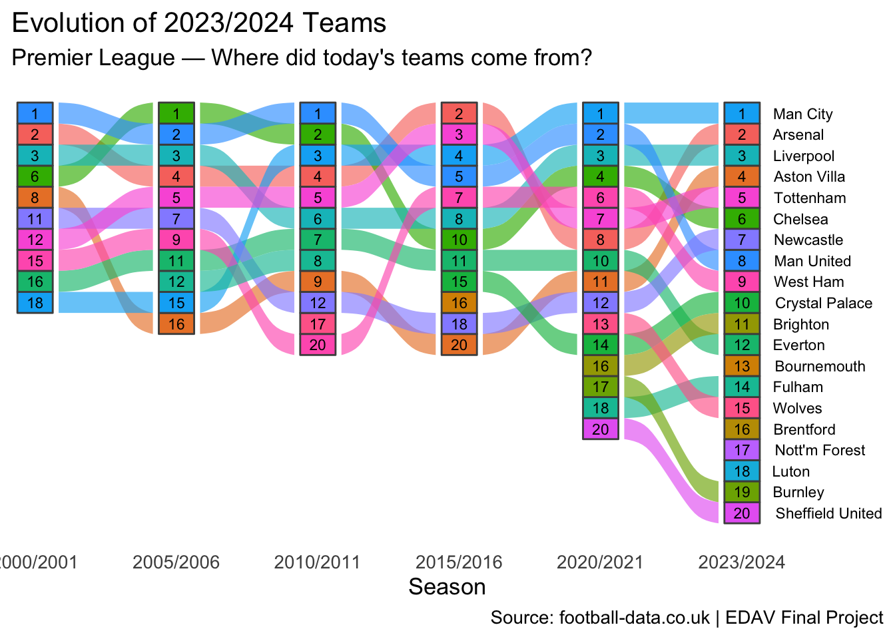
7 Relation among categorical variables
We want to analyze the existing categorical data and create additional categorical variables to better understand the relationships between team results and certain classifications. We would also like to explore the behavior of different teams, for example, how many home teams that were losing a match ended up winning it, or which leagues are more “home-biased” (meaning that home teams win most of the matches).
To do. Clean up a bit
Code
Data_England_Time=Data_England |>filter(is.na(Time)==F)# Convert Time to proper time formatData_England_Time$Time <-as.POSIXct(Data_England_Time$Time, format ="%H:%M:%S")# Extract hour for groupingData_England_Time$Hour <-as.numeric(format(Data_England_Time$Time, "%H"))Data_England_Time$Minute <-as.numeric(format(Data_England_Time$Time, "%M"))# Convert Date to proper format and extract day of weekData_England_Time$Date <-as.Date(Data_England_Time$Date)Data_England_Time$DayOfWeek <-weekdays(Data_England_Time$Date)Data_England_Time$IsWeekend <- Data_England_Time$DayOfWeek %in%c("Saturday", "Sunday")# Extract hour from Time columnData_England$Hour <-as.numeric(format(as.POSIXct(Data_England$Time, format ="%H:%M:%S"), "%H"))sort(unique(Data_England_Time$Hour))
[1] 12 13 14 15 16 17 18 19 20
Code
# Basic histogramggplot(Data_England_Time, aes(x = Hour)) +geom_bar() +labs(title ="Distribution of Match Starting Times",subtitle ="Histogram of kick-off hours",x ="Starting Hour",y ="Number of Matches" ) +theme_minimal()
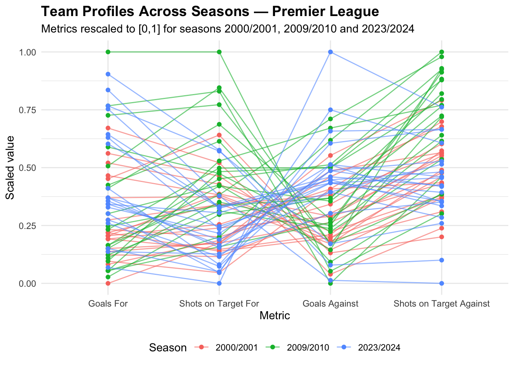
Code
# Create time categoriesData_England_Time$Time_Category <-cut(Data_England_Time$Hour,breaks =c(0, 14, 18, 21),labels =c("Morning", "Afternoon", "Evening"),include.lowest =TRUE)# Analyze match outcomes by time of daytime_analysis <- Data_England_Time %>%group_by(Time_Category) %>%summarise(Total_Matches =n(),Home_Wins =sum(FTR =="H", na.rm =TRUE),Away_Wins =sum(FTR =="A", na.rm =TRUE),Draws =sum(FTR =="D", na.rm =TRUE) )# Goals scored by time of daygoals_by_time <- Data_England_Time %>%group_by(Hour) %>%summarise(Avg_Home_Goals =mean(FTHG, na.rm =TRUE),Avg_Away_Goals =mean(FTAG, na.rm =TRUE),Total_Goals=mean(FTHG+FTAG,na.rm=TRUE),Matches =n() )# Discipline by timecards_by_time <- Data_England_Time %>%group_by(Hour) %>%summarise(Avg_Yellow_Cards =mean(HY + AY, na.rm =TRUE),Avg_Red_Cards =mean(HR + AR, na.rm =TRUE) )# Combine with time analysisweekend_time_analysis <- Data_England_Time %>%group_by(IsWeekend, Time_Category) %>%summarise(Matches =n(),Avg_Goals =mean(FTHG + FTAG, na.rm =TRUE),Home_Win_Rate =mean(FTR =="H", na.rm =TRUE) )# Home team performance by kick-off timehome_team_time <- Data_England_Time %>%group_by(HomeTeam, Time_Category) %>%summarise(Matches =n(),Wins =sum(FTR =="H"),Goals_Scored =mean(FTHG),Goals_Conceded =mean(FTAG),Win_Rate =mean(FTR =="H") ) %>%arrange(desc(Win_Rate))# Away team performance by kick-off timeaway_team_time <- Data_England_Time %>%group_by(AwayTeam, Time_Category) %>%summarise(Matches =n(),Wins =sum(FTR =="A"),Goals_Scored =mean(FTAG),Goals_Conceded =mean(FTHG),Win_Rate =mean(FTR =="A") )# Goals by hour of dayggplot(goals_by_time, aes(x = Hour, y = Total_Goals)) +geom_line() +geom_point() +labs(title ="Average Goals by Kick-off Time", x ="Hour of Day", y ="Average Goals per Match")
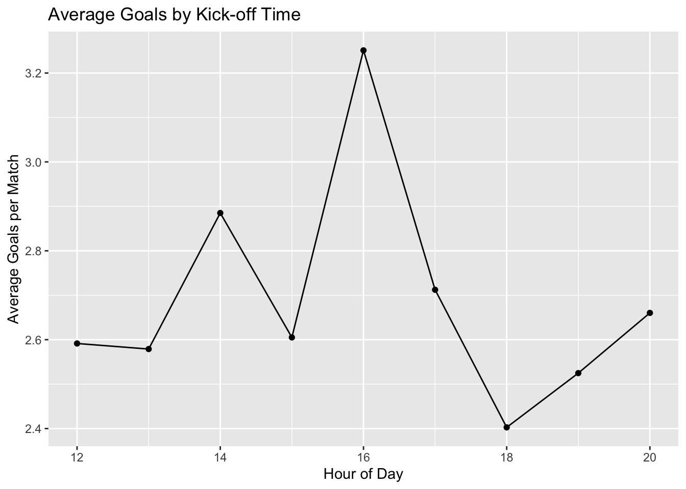
Code
# Match outcomes by time categoryggplot(time_analysis, aes(x = Time_Category, y = Home_Wins/Total_Matches)) +geom_col() +labs(title ="Home Win Rate by Time of Day", x ="Time Category", y ="Home Win Rate")
Code
# Create goal difference categoriesData_England_Time$Goal_Diff <- Data_England_Time$FTHG - Data_England_Time$FTAGData_England_Time$Result_Type <-ifelse(Data_England_Time$Goal_Diff >2, "Big Home Win",ifelse(Data_England_Time$Goal_Diff >0, "Close Home Win",ifelse(Data_England_Time$Goal_Diff ==0, "Draw",ifelse(Data_England_Time$Goal_Diff <-2, "Big Away Win", "Close Away Win"))))mosaicplot(~ Time_Category + Result_Type, data = Data_England_Time,main ="Match Types by Time of Day",xlab ="Time Category", ylab ="Result Type",color =c("darkred", "red", "gray", "blue", "darkblue"))
Code
# For more complex relationships (using vcd package)# Extract day of weekData_England_Time$DayOfWeek <-weekdays(as.Date(Data_England_Time$Date))Data_England_Time$DayType <-ifelse(Data_England_Time$DayOfWeek %in%c("Saturday", "Sunday"), "Weekend", "Weekday")mosaicplot(~ Time_Category + DayType, data = Data_England_Time,main ="Match Results: Weekend vs Weekday",xlab ="Day Type", ylab ="Full Time Result",color =c("#FF6B6B", "#4ECDC4", "#45B7D1"))
Code
# Result by Time and Day Typestructable(FTR ~ Time_Category + DayType+Div, data = Data_England_Time)
mosaic(~ Time_Category + DayType +Div+ FTR, data = Data_England_Time,main ="Results by Time and Day Type",labeling_args =list(rot_labels =c(20, 0, 0, 0)),highlighting ="FTR",highlighting_fill =c("red", "gray", "blue"))
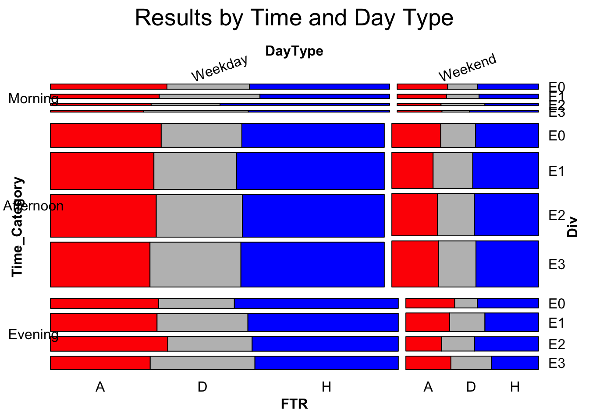
Code
# Simple binary/categorical versions of your variables# Similar to the (No/Yes) format in your image# Create binary variables from your dataData_England_Time$High_Goals <-ifelse(Data_England_Time$FTHG + Data_England_Time$FTAG >2.5, "Yes", "No")Data_England_Time$Home_Advantage <-ifelse(Data_England_Time$FTHG > Data_England_Time$FTAG, "Yes", "No")Data_England_Time$Many_Cards <-ifelse(Data_England_Time$HY + Data_England_Time$AY >3.5, "Yes", "No")Data_England_Time$Many_Shots <-ifelse(Data_England_Time$HS + Data_England_Time$AS >25, "Yes", "No")Data_England_Time$Weekend <-ifelse(weekdays(as.Date(Data_England_Time$Date)) %in%c("Saturday", "Sunday"), "Yes", "No")# Simple 2x2 mosaic plotmosaicplot(~ Home_Advantage + Weekend, data = Data_England_Time,main ="Home Wins vs Weekend Matches",xlab ="Home Win", ylab ="Weekend Match",color =c("lightblue", "salmon"))
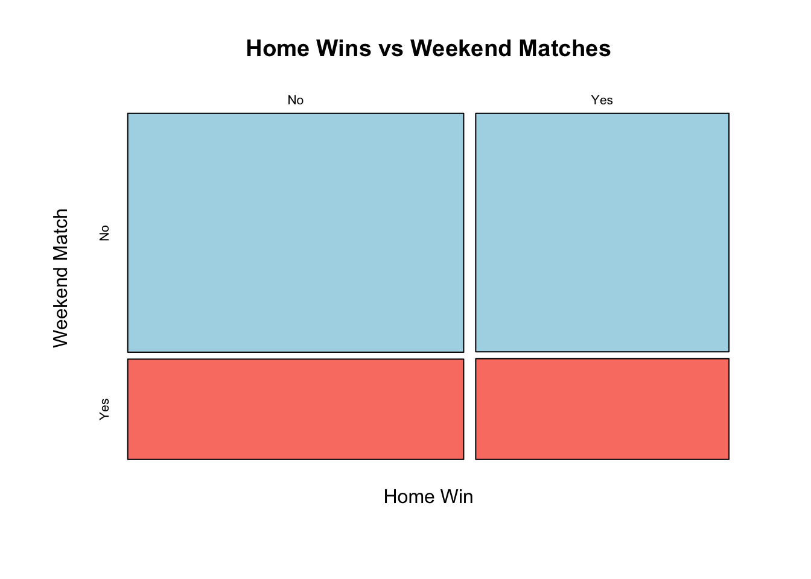
Code
# Create a structured plot similar to your imagepar(mfrow =c(2, 2)) # 2x2 grid of plots# Plot 1: Goals vs Weekendmosaicplot(~ High_Goals + Weekend, data = Data_England_Time,main ="High Scoring vs Weekend",color =c("#E7B800", "#2E9FDF"))# Plot 2: Cards vs Home Advantagemosaicplot(~ Many_Cards + Home_Advantage, data = Data_England_Time,main ="Many Cards vs Home Wins",color =c("#E7B800", "#2E9FDF"))# Plot 3: Shots vs Home Advantagemosaicplot(~ Many_Shots + Home_Advantage, data = Data_England_Time,main ="Many Shots vs Home Wins",color =c("#E7B800", "#2E9FDF"))# Plot 4: Goals vs Many Cardsmosaicplot(~ High_Goals + Many_Cards, data = Data_England_Time,main ="High Scoring vs Many Cards",color =c("#E7B800", "#2E9FDF"))
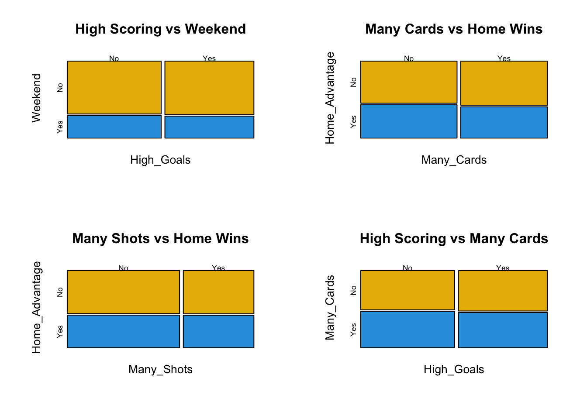
Code
par(mfrow =c(1, 1)) # Reset plot layout# Convert time to binary categoriesData_England_Time$Prime_Time <-ifelse(Data_England_Time$Hour %in%c(17, 18, 19, 20), "Yes", "No")Data_England_Time$Afternoon <-ifelse(Data_England_Time$Hour %in%c(12, 13, 14, 15), "Yes", "No")# Create mosaic plots with time variablesmosaicplot(~ Home_Advantage + Prime_Time, data = Data_England_Time,main ="Home Wins vs Prime Time Matches",xlab ="Home Win", ylab ="Prime Time (5-8 PM)",color =c("lightgreen", "orange"))
Code
mosaicplot(~ High_Goals + Afternoon, data = Data_England_Time,main ="High Scoring vs Afternoon Matches",xlab ="High Goals (>2.5)", ylab ="Afternoon Match",color =c("lightblue", "pink"))
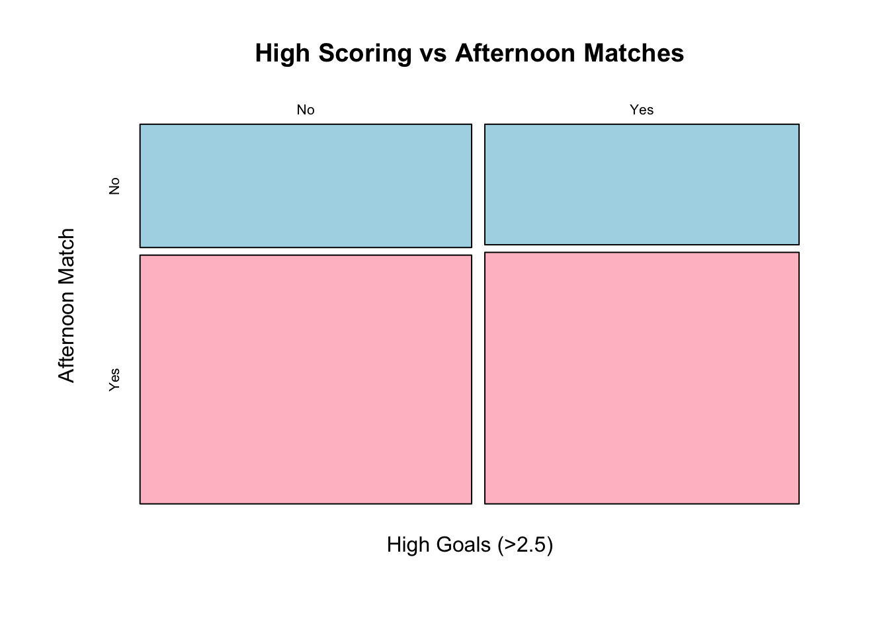
Code
# More polished version similar to academic papersmosaic(~Prime_Time+Home_Advantage + Weekend + Many_Cards, data = Data_England_Time,main ="Football Match Analysis",labeling_args =list(set_varnames =c(Home_Advantage ="Home Win", Weekend ="Weekend Match", Many_Cards ="High Cards"),rot_labels =c(20, 0, 0, 0) ),highlighting ="Home_Advantage",highlighting_fill =c("lightblue", "coral"))
Code
###
8 Detection of clusters
We know that many of the numerical variables in our dataset are related, so within each league we would like to identify clusters of teams that share similar behavior across seasons. Based on these clusters, we could create indexes and provide explanations for the patterns observed.
We would like to explore different ways of analyzing referees behavior during matches to determine whether referees are biased toward home teams. We also want to examine if there is any relationship between league results and World Cup outcomes. In addition, we plan to calculate the differences between the probabilities provided by betting houses and the actual outcomes, as well as conduct other complementary analyses.
To Do: Decide which one to get
Code
Referees=Data_England |>filter(is.na(Referee)==F )|>mutate(HomeWon=ifelse(FTR=="H",1,0),AwayWon=ifelse(FTR=="A",1,0))|>group_by( Referee ) |>summarise(Count_matches=n(),n_seasons=n_distinct(Season,na.rm=T),n_tiers=n_distinct(Tier,na.rm=T),Home_wins_count=sum(HomeWon,na.rm=T),Away_wins_count=sum(AwayWon,na.rm=T))Referees=Referees |>filter(Count_matches>=15)Referees %>%arrange(desc(Count_matches)) %>%slice_head(n =30) %>%# top 30mutate(Referee =fct_reorder(Referee, Count_matches)) %>%ggplot(aes(x = Referee, y = Count_matches)) +geom_segment(aes(xend = Referee, yend =0), color ="grey70") +geom_point(size =3, color ="darkgreen") +coord_flip() +labs(title ="Top Referees by Match Count",x ="Referee",y ="Matches" ) +theme_minimal()
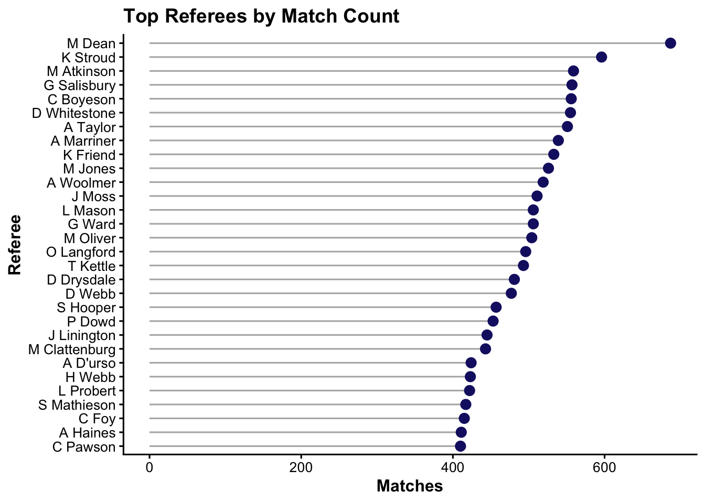
Code
Referees %>%mutate(home_win_rate = Home_wins_count / Count_matches,away_win_rate = Away_wins_count / Count_matches ) %>%ggplot(aes(x = home_win_rate, y = away_win_rate, fill = Count_matches)) +geom_point(alpha =0.7, color ="steelblue") +labs(title ="Home vs Away Win Rates per Referee",x ="Home Win Rate",y ="Away Win Rate",size ="Matches Refereed" ) +theme_minimal()
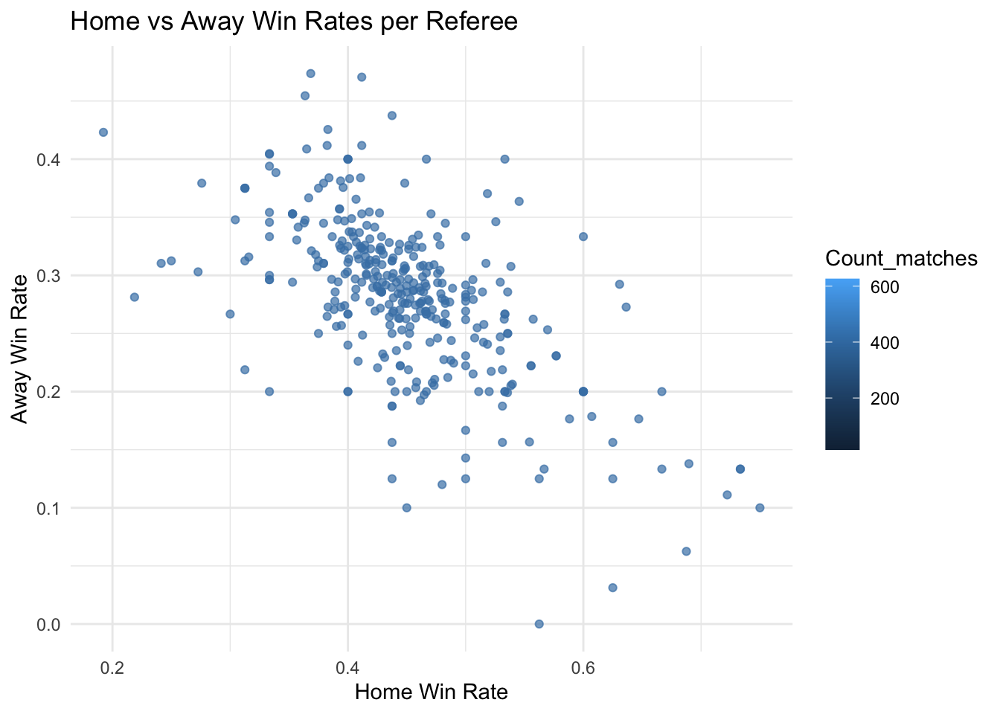
Code
Referees %>%mutate(home_win_rate = Home_wins_count / Count_matches ) %>%ggplot(aes(x = Count_matches, y = home_win_rate)) +geom_point(alpha =0.3, color ="darkblue") +scale_y_log10()+scale_x_log10()+labs(title ="Do More Experienced Referees Show Less Home Bias?",x ="Matches ",y ="Home Win Rate" ) +theme_minimal()
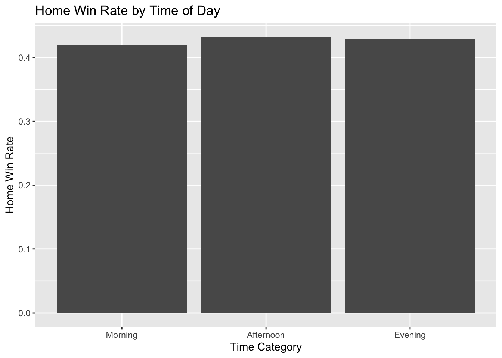
Code
Referees_Home_team=Data_England |>filter(is.na(Referee)==F)|>mutate(HomeWon=ifelse(FTR=="H",1,0),AwayWon=ifelse(FTR=="A",1,0))|>group_by( Referee, HomeTeam ) |>summarise(Count_matches=n(),n_seasons=n_distinct(Season,na.rm=T),n_tiers=n_distinct(Tier,na.rm=T),Home_wins_count=sum(HomeWon,na.rm=T),Away_wins_count=sum(AwayWon,na.rm=T))Referees_Home_team <- Referees_Home_team |>mutate(Home_win_rate = Home_wins_count / Count_matches,Total_matches = Count_matches )# Filter for meaningful combinations (enough matches)significant_ref_team <- Referees_Home_team |>filter(Total_matches >=20) # Only consider referee-team pairs with 5+ matches# Heatmapggplot(significant_ref_team, aes(x = Referee, y = HomeTeam)) +geom_tile(aes(fill = Home_win_rate), color ="white") +scale_fill_gradient2(low ="blue", mid ="white", high ="red", midpoint =0.5, # Average home win ratelimits =c(0, 1),name ="Home Win Rate" ) +labs(title ="Referee Home Team Win Rates",subtitle ="Heatmap showing if referees favor certain home teams",x ="Referee",y ="Home Team" ) +theme_minimal() +theme(axis.text.x =element_text(angle =45, hjust =1, size =8),axis.text.y =element_text(size =7),legend.position ="bottom" )